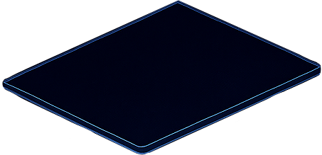
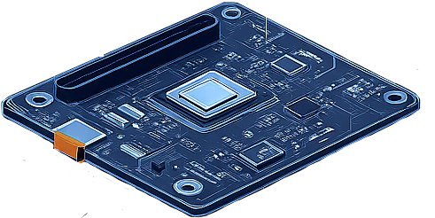
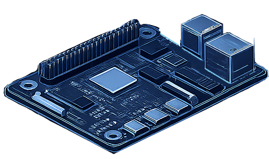
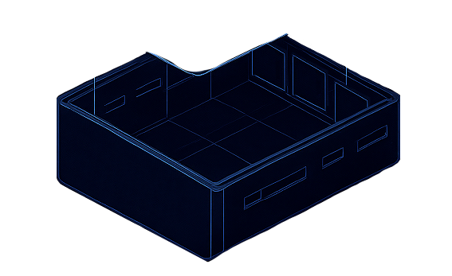

The Buraq AI Raspberry Pi module brings powerful edge AI processing to field operations. Designed for rugged environments, this compact unit processes visual intelligence locally, reducing latency and enabling real-time decision-making in areas with limited connectivity.

Weather-resistant enclosure with IP65 rating for harsh environments.

Custom hardware accelerator delivering 26 TOPS of AI performance.

Quad-core processor with 8GB RAM for edge computing tasks.

Mounting interface with cooling system and power management.
vcgencmd get_camera.sudo buraq-setup and follow the on-screen prompts.sudo buraq-register --token YOUR_TOKEN to authenticate the device with the platform.buraq-test-inference on the Pi module.sudo systemctl start buraq-inference.sudo systemctl enable buraq-inference.sudo buraq-update on the device.journalctl -u buraq-inference -f.ping 8.8.8.8.sudo systemctl status buraq-inference to identify any errors.sudo journalctl -xe.Powerful aerial intelligence processing for real-time threat detection and area surveillance.
Stationary monitoring solution with enhanced processing power for multi-camera deployments.
Portable handheld device with integrated display for on-the-go situational awareness.